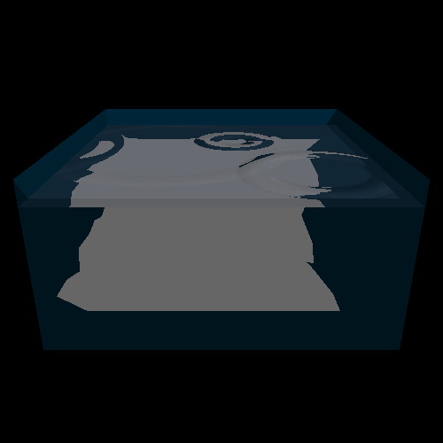
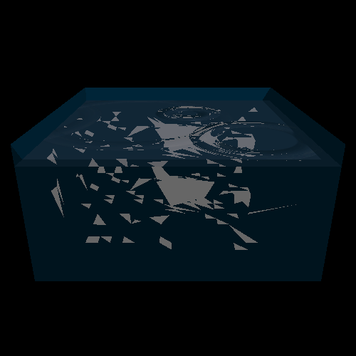

Caustics - Part 1
Water caustics were implemented in two phases corresponding roughtly to the two parts of the two-pass
algorithm used. In the first pass, caustic triangles are generated by refracting rays through the water
surface and projecting them onto surfaces underneath.
To start, solid white triangles were created as new objects in the scene, and the scene rendered normally
to see where the triangles wre going.
The first image shows where these triangles end up when a very low-resolution water mesh (10x10)
used. The second image is rendered with a higher resolution mesh, but with only a fraction of the
triangles actually created so that we can see them more clearly.
(These images are not anti-aliased).

